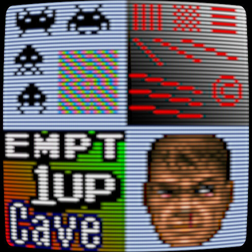
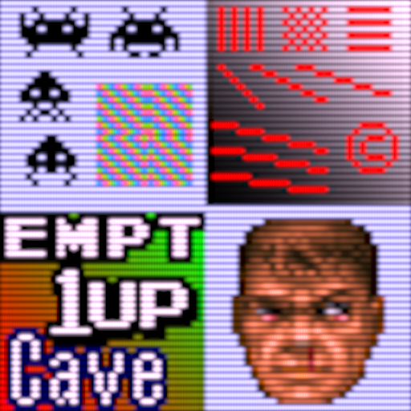

crt¶
Background¶
Preview Image¶
- crt-aperture
- crt-caligari
- crt-cgwg-fast
- crt-easymode-halation
- crt-easymode
- crt-geom

- crt-hyllian-multipass
- crt-hyllian

- crt-interlaced-halation
- crt-lottes-fast
- crt-lottes-multipass-interlace-glow
- crt-lottes-multipass
- crt-lottes
- crt-nes-mini
- crt-potato-cool
- crt-potato-warm
- crt-royale

- crt-slangtest-cubic
- crt-slangtest-lanczos
- crtglow_gauss_ntsc_3phase
- crtglow_gauss
- crtglow_lanczos
- dotmask
- gtu-famicom
- gtu-v050

- gtuv50-radeon
- gtuv50
- meta-crt
- ntsc-shadowmask-interlacing
- ntsc-shadowmask-noblend

- ntsc-shadowmask
- phosphorlut-4k
- phosphorlut-shadowmask
- phosphorlut
- zfast-crt